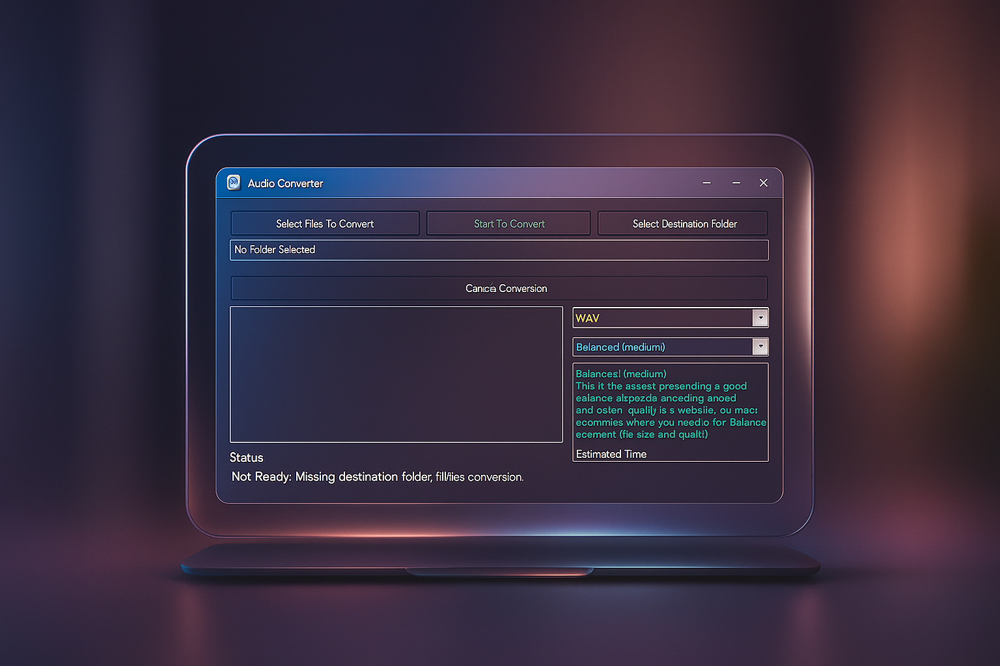

Sneak Peek



Elegant. Powerful. Lightning-fast audio conversion with advanced control.
Wait... It’s not ready. Learn why →Cleans cluttered system and audio temp files before conversion.
Preps your system for efficient audio read/write access.
Ensures network operations don’t interfere with batch jobs.
Supports WAV, MP3, FLAC, AAC, Opus, and more.
We’re polishing every byte. From thread-handling to hardware trimming, this isn’t just a converter — it’s an experience. Meanwhile, your curiosity fuels us. Stay tuned!